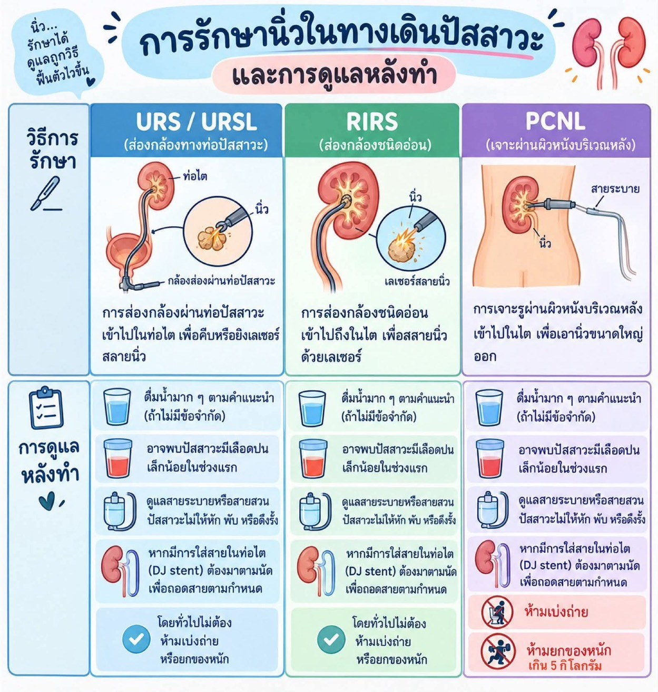
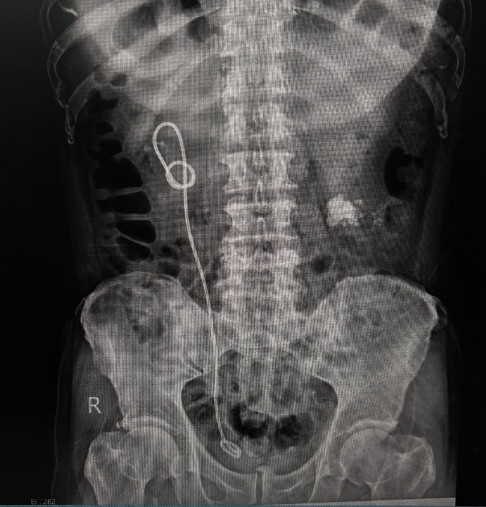
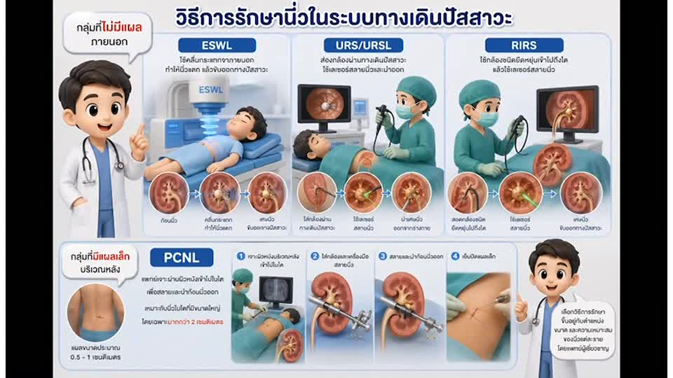
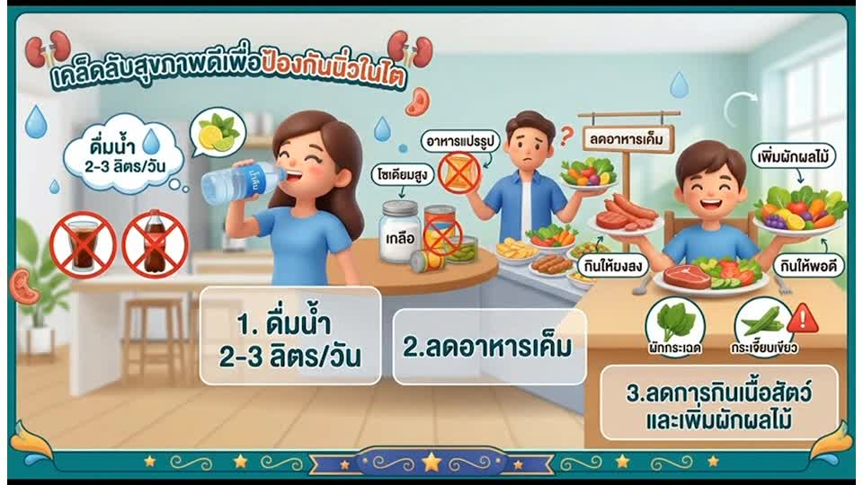
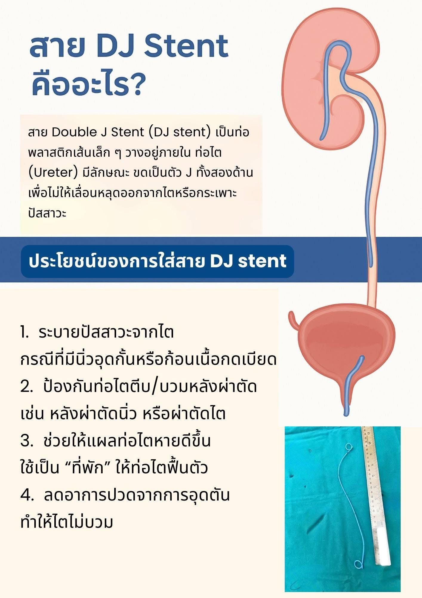

อาการที่พบบ่อย
- ปวดบริเวณเอวหรือสีข้างอย่างรุนแรงเป็นพัก ๆ
- ปวดร้าวลงท้องน้อยหรือขาหนีบ
- คลื่นไส้ อาเจียน
- ปัสสาวะมีเลือดปน ขุ่น หรือมีเม็ดกรวดปน
- ปัสสาวะแสบขัด หรือปัสสาวะบ่อย
ปัจจัยเสี่ยง
- ดื่มน้ำน้อย
- รับประทานอาหารเค็มจัด หรือโปรตีนจากเนื้อสัตว์มาก
- รับประทานอาหารที่มีออกซาเลตสูง เช่น ผักโขม (ปวยเล้ง) ใบชะพลู ผักชีฝรั่ง มะเฟือง (โดยเฉพาะชนิดเปรี้ยว) บีทรูท มันสำปะหลัง ถั่วลิสง อัลมอนด์ งา ชาเข้ม/ชาดำ กาแฟ โกโก้ และดาร์กช็อกโกแลต
- ดื่มน้ำจากแหล่งธรรมชาติ เช่น น้ำฝน น้ำบ่อ น้ำบาดาล
- มีประวัติครอบครัวเป็นนิ่ว
- ภาวะน้ำหนักเกิน
ขั้นตอนการตรวจวินิจฉัยโรค
- ซักประวัติ
- ตรวจร่างกาย
- ตรวจปัสสาวะและตรวจเลือด
- อัลตราซาวด์ (Ultrasound)
- เอกซเรย์ (X-ray)
- เอกซเรย์คอมพิวเตอร์ (CT Scan)
วิธีการรักษานิ่วในระบบทางเดินปัสสาวะ
- นิ่วขนาดเล็ก: ดื่มน้ำมาก ๆ ร่วมกับยา เพื่อช่วยให้นิ่วหลุดออกเอง
- ESWL การสลายนิ่วด้วยคลื่นกระแทกจากภายนอกร่างกาย
- URS / URSL การส่องกล้องผ่านท่อปัสสาวะเข้าไปในท่อไต เพื่อคีบหรือยิงเลเซอร์สลายนิ่ว
- RIRS การส่องกล้องชนิดอ่อนเข้าไปถึงในไต เพื่อสลายนิ่วด้วยเลเซอร์
- PCNL การเจาะรูผ่านผิวหนังบริเวณหลังเข้าไปในไต เพื่อเอานิ่วขนาดใหญ่ออก
การดูแลหลังทำ

สาย DJ Stent คืออะไร?
สาย Double J Stent (DJ stent) เป็นท่อเส้นเล็ก ๆ วางอยู่ภายในท่อไต (Ureter) มีลักษณะขดเป็นตัว J ทั้งสองด้าน เพื่อไม่ให้เลื่อนหลุดออกจากไตหรือกระเพาะปัสสาวะ ช่วยระบายปัสสาวะจากไต ป้องกันท่อไตตีบหรือบวมหลังผ่าตัด ช่วยให้แผลท่อไตหายดีขึ้น และลดอาการปวดจากการอุดตัน
ภาพเอกซเรย์ผู้ป่วยที่ใส่สาย DJ Stent

การปฏิบัติตัวเมื่อใส่สาย DJ Stent
- ไม่กลั้นปัสสาวะ ควรปัสสาวะทันทีเมื่อรู้สึกปวด เพื่อลดแรงดันในกระเพาะปัสสาวะซึ่งอาจดันน้ำปัสสาวะย้อนขึ้นไปที่กรวยไตและทำให้ปวดเอวได้
- ดื่มน้ำมาก ๆ ดื่มน้ำสะอาดวันละ 2–3 ลิตร (เว้นแต่แพทย์สั่งจำกัดน้ำ) เพื่อช่วยลดการตกตะกอนของนิ่ว และช่วยให้ปัสสาวะไหลสะดวก
- หลีกเลี่ยงกิจกรรมหนัก งดการวิ่ง กระโดด ยกของหนัก หรือการออกกำลังกายที่กระทบกระเทือนช่วงเอวและท้อง เพื่อป้องกันสายเคลื่อนหรือหลุด
- การเคลื่อนไหว สามารถทำกิจวัตรประจำวันเบา ๆ หรือเดินช้า ๆ ได้ แต่หากมีอาการปวดหน่วงที่เอวหรือกระเพาะปัสสาวะ ให้หยุดพักและนอนราบ
- มองเห็นได้จากเอกซเรย์ สาย DJ Stent มองเห็นได้ในภาพเอกซเรย์ (X-ray) แพทย์จึงใช้เอกซเรย์ตรวจดูตำแหน่งของสายได้
- ไปโรงพยาบาลอื่น ต้องแจ้งแพทย์และพยาบาลทุกครั้งว่ามีสาย DJ Stent อยู่ในร่างกาย
สาย DJ Stent ไม่ได้ใส่ไว้ตลอดชีวิต
- ทุกครั้งที่มาพบแพทย์ ให้สอบถามว่าจะถอดสายเมื่อไร และมาตรวจให้ตรงตามนัด
- หากไม่ได้ถอดสายตามกำหนด สายอาจมีหินปูนหรือนิ่วมาเกาะ อุดตัน ทำให้ติดเชื้อทางเดินปัสสาวะ ถอดออกยาก หรือต้องผ่าตัดเพื่อเอาสายออก และอาจทำให้ไตเสียหายได้
ป้องกันการเกิดนิ่วซ้ำ
- ดื่มน้ำ 2–3 ลิตรต่อวัน (ถ้าไม่มีข้อจำกัด) ให้ปัสสาวะใส
- ลดอาหารเค็ม
- ลดการรับประทานเนื้อสัตว์ และเพิ่มผักผลไม้
- หลีกเลี่ยงอาหารที่มีออกซาเลตสูงในปริมาณมาก (ดูตัวอย่างในหัวข้อปัจจัยเสี่ยง)
- ไม่กลั้นปัสสาวะ
- มาตรวจตามนัด
อาการที่ต้องรีบพบแพทย์
- ปวดรุนแรงมาก รับประทานยาแล้วไม่ดีขึ้น
- มีไข้ หนาวสั่น
- ปัสสาวะไม่ออก หรือออกน้อยมาก
- ปัสสาวะเป็นเลือดสดหรือมีลิ่มเลือด
- อาเจียนมาก รับประทานอาหารไม่ได้
ภาพประกอบ (แตะเพื่อขยาย)



วิดีโอ
มีข้อสงสัย ติดต่อ หอผู้ป่วยศัลยกรรมทางเดินปัสสาวะ ตกแต่ง แผลไฟไหม้ โรงพยาบาลพุทธชินราช พิษณุโลก โทร 055-270-300 ต่อ 1846, 18406, 18407